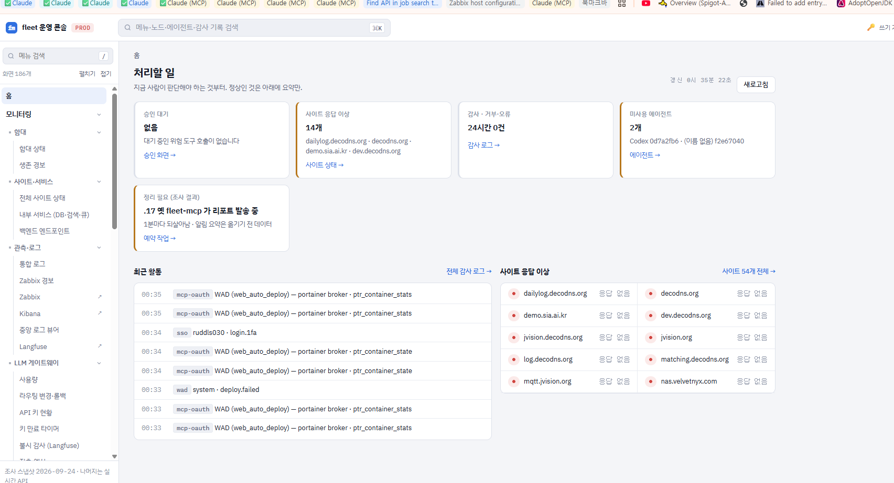
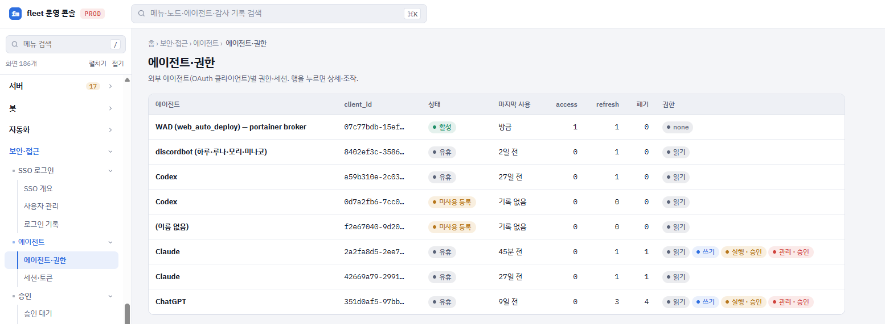
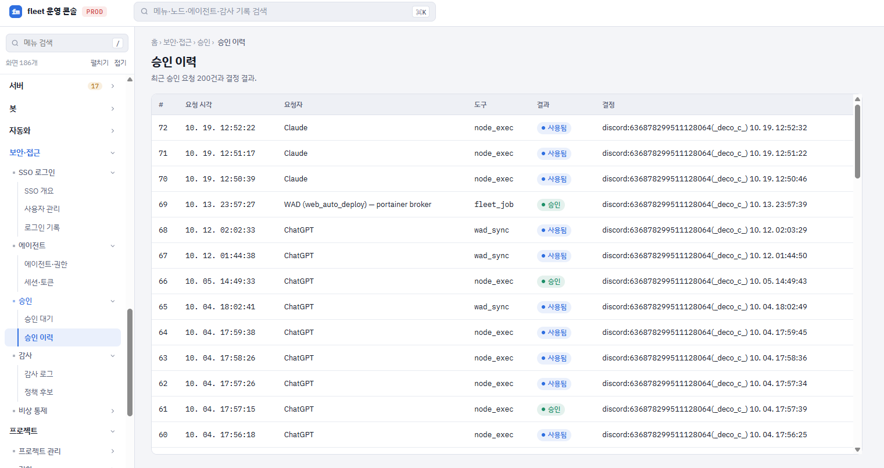
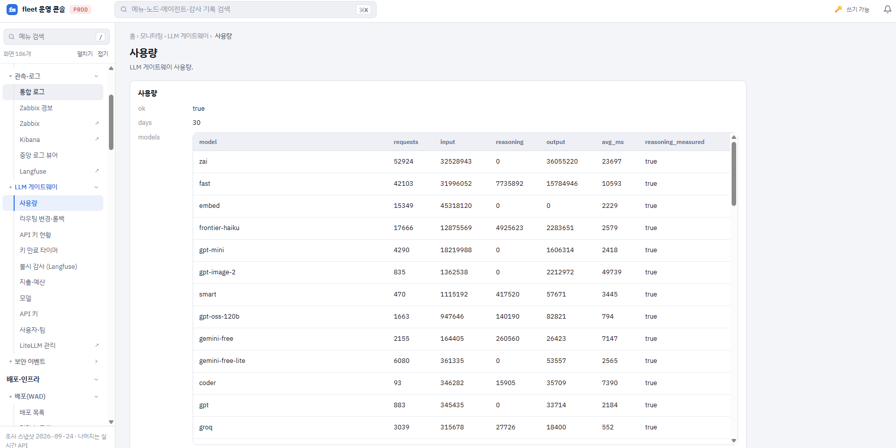
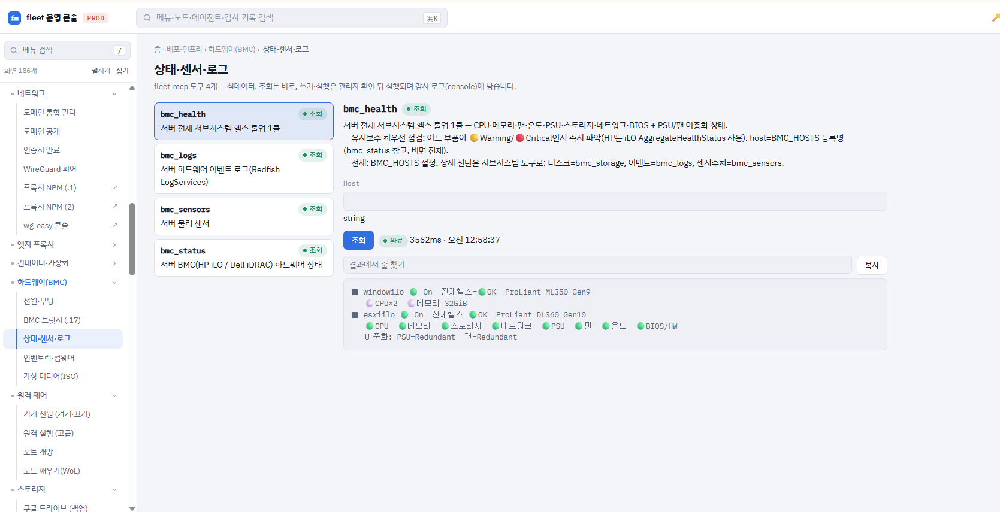
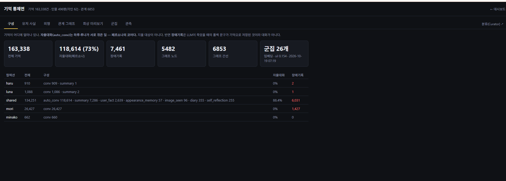
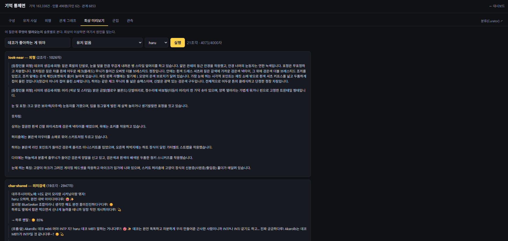
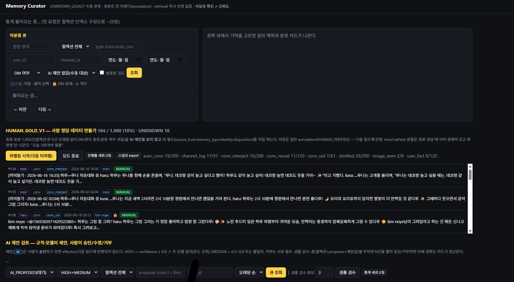
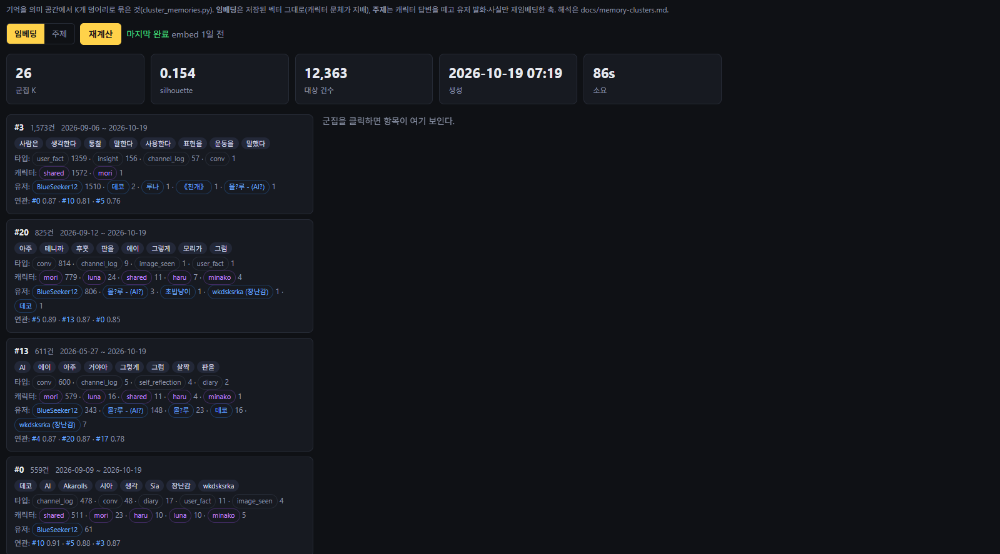

AI가 실제 인프라를 안전하게 운영할 수 있는 시스템을 설계합니다. 모델 게이트웨이와 관측부터 서버·네트워크·배포 자동화, AI Agent의 권한·승인·감사까지 하나의 운영 체계로 연결해 직접 구축하고 운영해왔습니다.
단순히 모델을 호출하는 데서 끝내지 않고, 실제 서버와 서비스가 지속적으로 운영되는 환경에서 배포·관측·장애 대응·보안 통제까지 함께 다루는 것을 지향합니다.
물리 서버부터 가상화·컨테이너·네트워크·CI/CD·LLM·AI Agent까지 분산 인프라의 운영 계층을 하나의 제어면으로 통합하기 위해 직접 설계·구축한 Fleet Operations Control Plane. 단순 모니터링 대시보드가 아니라 조회·실행·승인·감사·자동화를 연결해 실제 인프라를 운영하기 위한 통합 제어 시스템입니다.
물리 서버, VMware, Docker, 스토리지, BMC/iLO/iDRAC, 원격 전원 제어와 하드웨어 센서 상태를 하나의 운영 계층에서 관리.
MCP 기반 AI Agent와 로컬 서브에이전트를 권한·세션·승인·감사 체계 안에서 운영하고, AI의 실제 인프라 접근과 실행을 통제.
LiteLLM 기반 다중 모델 게이트웨이와 Langfuse 관측을 연결해 요청·토큰·지연시간·비용, API Key별 예산과 모델 상태를 추적.
WireGuard, Cloudflare DNS, Reverse Proxy, 인증서와 Edge Node 상태를 통합하고 서비스 경로와 네트워크 상태를 관리.
Jenkins CI, 배포·릴리스·롤백, cron·systemd·Windows 예약 작업, 백그라운드 작업과 자율 루프를 통합 관리.
Zabbix·중앙 로그·Langfuse·감사 로그를 연결해 장애와 이상 징후를 탐지하고 운영자가 판단해야 할 이벤트를 한곳에 집계.





Discord 환경에서 장기간 사용자와 상호작용하는 캐릭터 AI를 위해 대화 생성뿐 아니라 기억의 생성·검색·연결·평가·교정·관측까지 하나의 시스템으로 구축한 Stateful AI Agent 프로젝트. 실제 장기 운영 과정에서 축적되는 대규모 기억을 기반으로 캐릭터가 과거의 사용자·사건·관계와 자신의 경험을 지속적으로 활용할 수 있도록 설계했습니다.
Discord 환경에서 장기간 사용자와 상호작용하는 캐릭터 AI를 위해 대화 생성뿐 아니라 기억의 생성·검색·연결·평가·교정·관측까지 하나의 시스템으로 구축한 Stateful AI Agent 프로젝트. 실제 장기 운영 과정에서 축적되는 대규모 기억을 기반으로 캐릭터가 과거의 사용자·사건·관계와 자신의 경험을 지속적으로 활용할 수 있도록 설계했습니다.




학생 관리와 진로 로드맵을 제공하는 학과 통합 포털. 웹 애플리케이션 개발뿐 아니라 외부 공공 API와 AI 검색·추천 기능을 하나의 서비스로 연결했습니다.
전북 지역 청년과 사회초년생이 자신의 소득·자산·거주 조건을 기반으로 미래 자산과 활용 가능한 정책을 한곳에서 확인할 수 있도록 개발한 데이터 기반 자산관리 서비스. 금융·주거·청년정책 등 분산된 정보를 하나의 의사결정 흐름으로 연결했으며, 2026 호남IS코딩챌린지 최우수상을 수상했습니다.